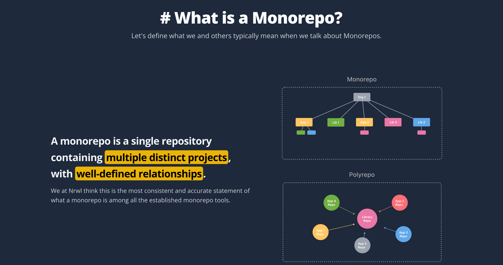

从MonoRepo到私仓Verdaccio：实战指南
一、引言
在当今软件开发的复杂生态中，高效的代码管理和依赖包管理是构建可维护、可扩展项目的关键。MonoRepo作为一种集中式的代码管理模式，以及Verdaccio这样的私有包仓库工具，为开发者提供了强大的解决方案。本文将深入探讨MonoRepo和Verdaccio，并结合实际项目目录结构进行全面的实战演示。
二、什么是MonoRepo

MonoRepo是一种将多个项目或模块的代码存储在同一个代码仓库中的管理方式。在这种模式下，不同的应用程序、库或工具可以共享代码、配置和依赖管理，促进了代码的复用和团队协作。例如，在一个大型的软件开发项目中，前端应用、后端服务以及相关的工具库都可以存放在同一个MonoRepo中，方便统一管理和维护。
三、MonoRepo对比MultiRepo的优势
（一）代码共享与复用
MonoRepo使得不同模块间共享代码变得轻而易举。例如，在一个包含多个前端应用的MonoRepo中，一个通用的UI组件库可以被多个应用复用，避免了重复开发，提高了开发效率。
（二）统一的开发流程
所有项目集中在一个仓库，团队可以采用统一的开发规范、工具和流程。这有助于减少因项目配置差异带来的问题，提高整体开发效率。
（三）依赖管理简化
由于所有模块都在同一仓库，依赖管理更加集中和可控。可以统一更新所有模块的依赖，避免版本冲突等问题。
（四）原子提交和一致性
对多个相关模块的修改可以通过一次原子提交完成，确保代码的一致性和完整性。例如，当修改一个公共库并更新使用该库的应用时，可以在一次提交中完成所有相关更改。
四、什么是Verdaccio
Verdaccio是一个开源的私有npm包仓库，允许开发者在本地或服务器上搭建一个私有的包管理服务器。它不仅可以存储和管理自己的npm包，还能代理远程的npm仓库，使得团队内部可以快速获取和使用所需的包，而无需每次都从公共npm仓库下载。
https://verdaccio.org/
五、私仓的好处
（一）安全性
私仓可以有效保护公司内部代码和知识产权，防止敏感信息泄露到公共仓库。
（二）稳定性
公共仓库可能会遇到网络问题或包被删除等情况，而私仓提供了稳定的包存储和分发服务，确保项目不受外部因素影响。
（三）定制化
开发者可以根据团队需求定制私仓的访问权限、包的版本管理等，更加灵活地满足项目需求。
（四）节省带宽
常用包只需从公共仓库下载一次到私仓，团队成员可以从私仓快速获取，节省大量带宽资源。
六、如何搭建私仓
（一）安装Node.js
Verdaccio基于Node.js开发，首先需要在服务器或本地环境安装Node.js。可以从Node.js官方网站下载并安装最新版本。
（二）安装Verdaccio
使用npm全局安装Verdaccio：
1 | npm install -g verdaccio |
（三）配置Verdaccio
安装完成后，运行verdaccio命令，它会在当前用户目录下生成一个配置文件.config/verdaccio/config.yaml。可以根据需求修改配置，例如设置访问权限、存储路径、代理远程仓库等。以下是一个简单的配置示例：
1 | # 监听地址和端口 |
（四）启动Verdaccio
修改完配置文件后，再次运行verdaccio命令启动私仓服务。默认情况下，Verdaccio会监听在http://localhost:4873。
七、如何管理私仓
（一）用户管理
Verdaccio支持基本的用户认证和权限管理。可以通过配置文件中的auth部分添加用户，并为不同用户分配不同的权限，如只读、读写等。例如，使用htpasswd文件管理用户密码：
1 | htpasswd -b./htpasswd <username> <password> |
（二）包管理
可以使用npm命令与私仓进行交互，实现包的上传、下载和删除等操作。
1 | # 登录私仓 |
（三）镜像管理
Verdaccio可以配置为代理远程npm仓库，当私仓中没有所需的包时，会自动从远程仓库下载。可以在配置文件的uplinks字段中指定远程仓库的地址。
八、MonoRepo管理与发布：基于实际项目目录的实战
假设我们有一个名为my - dapp - libs的MonoRepo项目，其目录结构如下：
1 | my-dapp-libs/ |
（一）项目初始化
- 创建项目目录：
1 | mkdir my-dapp-libs |
- 初始化pnpm项目：
1 | pnpm init -y |
- 配置pnpm workspace：在
package.json中添加以下内容，指定packages目录下的所有子目录为工作区：
1 | { |
- 初始化lerna项目：
1 | npx lerna init |
这会在项目根目录生成lerna.json文件，用于配置lerna相关选项。
（二）开发项目模块
packages/ui模块：开发一个UI组件库，例如创建一个按钮组件Button.jsx：
1 | import React from'react'; |
在packages/ui/package.json中配置模块信息，如名称、版本、入口文件等：
1 | { |
packages/hooks模块：开发一组自定义React Hook，例如useCounter.js：
1 | import { useState } from'react'; |
在packages/hooks/package.json中配置模块信息：
1 | { |
packages/cli模块：开发一个命令行工具，例如index.js：
1 |
|
在packages/cli/package.json中配置模块信息，并添加bin字段指定命令行入口：
1 | { |
（三）模块间依赖管理
在packages/apps目录下创建一个应用项目，假设名为web-app，它需要使用@mydapp/ui和@mydapp/hooks模块。在packages/apps/web-app/package.json中添加依赖：
1 | { |
然后在根目录执行pnpm install，pnpm会自动安装所有工作区的依赖，并处理模块间的链接。
（四）发布模块到私仓
- 登录私仓：在每个需要发布的模块目录下（如
packages/ui、packages/hooks、packages/cli），执行以下命令登录私仓：
1 | npm adduser --registry=http://localhost:4873 |
- 发布模块：使用lerna发布变更的模块。在根目录执行：
1 | npx lerna publish --registry=http://localhost:4873 |
lerna会检测哪些模块发生了变更，并提示选择合适的版本升级策略（如补丁版本、次要版本、主要版本），然后完成发布。
（五）在其他项目中使用私仓中的包
假设我们有一个新的项目需要使用@mydapp/ui包。在新项目的package.json中配置registry为私仓地址：
1 | { |
然后执行pnpm install @mydapp/ui，即可从私仓中安装所需的包。
九、总结
通过本文的介绍，我们深入了解了MonoRepo和Verdaccio的概念、优势以及搭建和管理方法，并结合实际项目目录进行了全面的实战演示。合理运用MonoRepo和私仓Verdaccio，能够提高代码管理和依赖包管理的效率，增强项目的安全性和稳定性，为软件开发项目带来诸多便利。在实际开发中，开发者可以根据项目需求灵活运用这些技术，打造更加高效、可维护的项目架构。